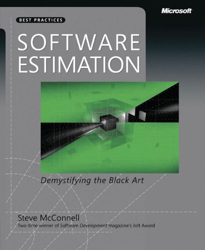
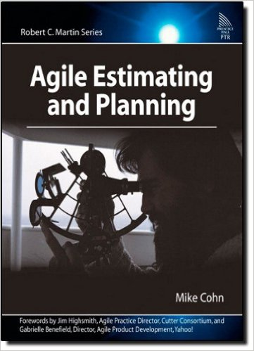
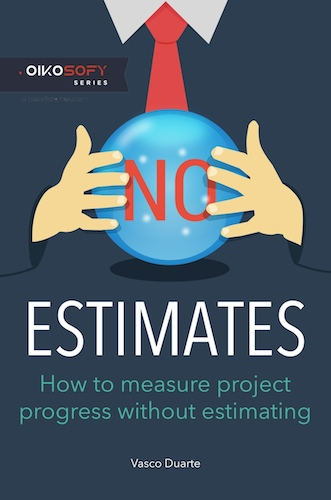

“One of the two most common causes of runaway projects is poor estimation”
better budgeting
increased credibility for dev team
higher quality
common body of knowledge
current state of affairs
emerging practices
“Estimation is an objective approximation, which is a value that is usable for some purpose even if input data may be incomplete, uncertain, or unstable” - Wikipedia
A target is a statement of a desirable business objective
A commitment is a promise to deliver defined functionality at a specific level of quality by a certain date
“It always takes longer than you expect, even when you take into account Hofstadter's Law.” - Hofstadter's Law
“Work expands so as to fill the time available for its completion.” - Parkinson’s Law
others ...
feature cost = essential complx. + accidental complx.
tax code
landing and insurance
genetic algorithms
test environment is down
approvals
legacy code!
how long the app server takes to start :D
vs
Common Body Knowledge
Agile Estimation Techniques
#NoEstimates
  